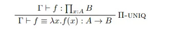
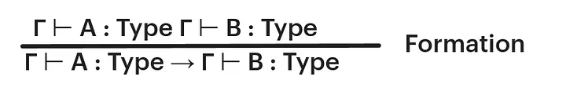
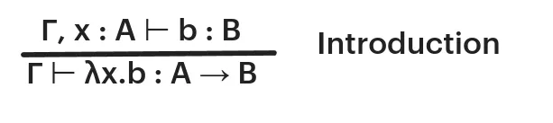
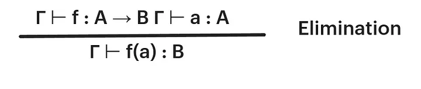
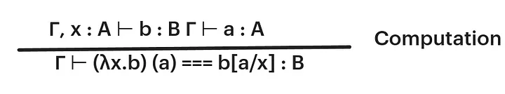

← ← ← 5/21/2024, 4:27:43 PM | Posted by: Lorenzo Battistela
9 min read
A few months ago, I had contact with some really interesting open source projects. Compilers, languages, runtimes, mostly low level stuff I had little to no contact before. So I decided to dive in, and started studying. I ended up discovering a whole new world of theories, proofs and research.
But I felt I did not know the basics, the fundamentals of it — mainly because when trying to read an article, I even had trouble understanding the notation.
Have you ever seen something like this?

It really seems complicated, but it is no monster. Let’s learn how to read this and what is type theory.
We all know what a paradox is. Sometimes we hear some fun ones that make us think, such as the Twin Paradox. What happens is that physics and math are sources of many paradoxes. One of them is Russell’s paradox, which is a set-theoretic paradox that shows that every set theory that contains an unrestricted comprehension principle leads to contradictions. Basically, for any property, there is a set of all and only the objects that have that property. Then we have a set R that is the set of all sets that are not member of themselves. If R is not a member of itself, then its definition entails that it is a member of itself. Otherwise, if it is a member of itself, then it is not a member of itself since this is the set of all the sets that are not members of themselves.
Well that is confusing, but read it slowly and understand the problem here.
Type theory was created with the goal of avoiding paradoxes in a math equation based on set theory and formal logic. After that, we had progress on type theory such as ramified type theory together with an axiom of reducibility.
We also have Alonzo Church into play with his Lambda Calculus — which is the most popular conjunction of type theory. Church demonstrated it as a foundation of mathematics — a higher-order logic.
In modern literature, type theory usually refers to a typed system based on lambda calculus. Influential systems worth mentioning is Martin-Lofs intuitionistic type theory and Thierry Coquands calculus of constructions.
As the name states, in type theory, the basic object of study is a type. I am sure you are familiar with some types. For example, natural number is a type, usually denoted nat . Integer is also a type. = is a type called the identity type.
Types can have terms (or terms can have types?). For example, 1 is a term of type nat , and we can declare it as 1 : nat . This is a type declaration. This may sound familiar if you have experience with statically typed programming languages like Rust.
We also have a special type called Type . As you may imagine, it is used to define the type of a type. So, for example, nat : Type is a valid declaration.
Type theory is a subject that grows along with more fields, (such as category theory and proof theory) and we can have multiple interpretations for types. Here are some of them:
Let’s introduce judgements, and a new symbol: ⊢
How do we read the following judgement?
⊢ A : Type
We can read this as: A is of type Type. This is a simple judgement.
Another symbol is used to represent Context: Γ (Gamma).
Γ is a finite sequence of type declarations, aka context. Intuitively, this mean that the assumptions in the left-hand context imply the right-hand side.
Γ ⊢ A : Type
We read this as: Under context gamma, A is of type Type
What about the following?
Γ ⊢ A === B : Type
This triple equal sign stands for judgemental equality. In type theory, we can have multiple types of equality, and note that this is different from the = sign stated as identity. So, Under context Gamma, A is judgementally equal to B which has type Type.
Most modern type theories introduce function types. They are introduced with an arrow symbol, and are defined inductively. For example, if a and b are types, then a->b is the type of a function which takes a parameter of type a and returns a term of type b . Types of this form are also known as simple types.
Let’s walk through a simple example:
// add: a function that takes two natural numbers and return one nat number
add : nat -> (nat -> nat)
You may find weird the parentheses, since we’re all used with something like add(a : nat, b : nat) -> : nat . What happens is that, strictly speaking, a simple type only allows for one input and one output, and this way, we could not receive two args in the way I wrote. Therefore, a better way to read this is: add is a function which takes a nat and returns another function of the form nat -> nat . Note that the arrow is right associative.
Ok, but untill now Type theories seem pretty inofensive right? What can we do about it? What this has to do with the image in the beginning of the article?
Well, the power of type theories is in specifying how terms may be combined through inference rules. For example, for functions we have function application. If a is a term of type c -> d and b is a term of type c , then the application of a to b , often written ( a b) has type d . Example:
3 : nat
6 : nat
10 : nat
(add 3) : nat -> nat // partial application 3 + x
((add 6) 3) : nat // 9
((add 10) ((add 3) 6)) : nat // results in (10 + (3 + 6)) = 19
Note that function application is left associative.
Type theory has a built-in notation of computation. The following terms are different:
1 + 5 : nat
3 + 3 : nat
0 + 6 : nat
But as you can see, they all compute to 6 : nat . The concept of reduction / reduce to refer to computation. Example: 3 + 3 : nat reduces to 6 : nat and we can write this as: 3 + 3 : nat ->> 6 : nat . A term without any variables that cannot be reduced further is called a canonical term.
Terms that compute to the same term are equal. As I said before, equality is quite complex on type theory, and the equality we’re referring here is when two terms can be substituted for each other. For example:
x : nat
x + (10 + 2) : nat
x + (5 + 7) : nat
x + (10 + 2) : nat ->> x + 12 : nat
x + (5 + 7) : nat ->> x + 12 : nat
The terms above are judgementally equal.
OK, now that we discussed a little bit the basics, let’s try to develop a little bit more the function type (coming from lambda calculus). Let’s introduce it with a formal notation and then move forward to other types.
As discussed before, given two types A and B, there is a type A -> B.
We can write the formation rule for function types as follows:

Remember that Γ stands for context. A formation rule, as its name states, gives us a way to form function types.
We can read this rule as: Under context Gamma, if A is of type Type and B is of type Type, then we have a function from type A to type B.
But besides that, we cannot do anything more yet. Here it comes the introduction rule:

We can read this as: Under context gamma, assume x is of type A. If b is of type B, then we have a function of type A that goes to type B receiving b as an argument.
The introduction rule states that, to specify a term of A -> B, it is sufficient to specify a term b : B for every x : A . To understand this rule, it is important to understand the lambda calculus representation of functions. So, for example: we can say that λx.λy.( x y ) is a lambda term that receives two arguments, x and y, and applies x to y. When we receive an x and y, we substitute them in the term: λx.λy ( x y ) negate 1 => ( negate 1 ).
That said, now we have terms of A -> B but we have no rules to use them in a way. Now we need to introduce an elimination rule. The elimination rule for function type says that, given a function f : A -> B and a term a : A we can form the term f(a) : B . Formally:

But well, we have no way to compute that. We do not know how to compute that. So, we have a computation rule that tells us what happens when the elimination rule is applied to a result of the introduction rule (in this case, a new function type).

The notation b[a / x] : B is the term that we obtain from b by substituting a for every x . Therefore, we can read it as:
Under context gamma, assume x is of type A. if b is of type B and a of type A, we have a function that receives b as an argument and it is judgementally equal to the term where we substitute all occurrences of x in b for a.
To sum up, our rules state the following:
f : A -> B is equivalent to defining a term f(x) : B for every x : A .And, as I said before, type theory has many interpretations. About functions we can say that:
In the next article of this type theory series, we will discuss more this rules and introduce new types. If you find any mistake or typo, feel free to comment, as I’m still pretty new to this subject as well. Thanks for reading!
History of type theory - Wikipedia
And papers in the reference of those :)